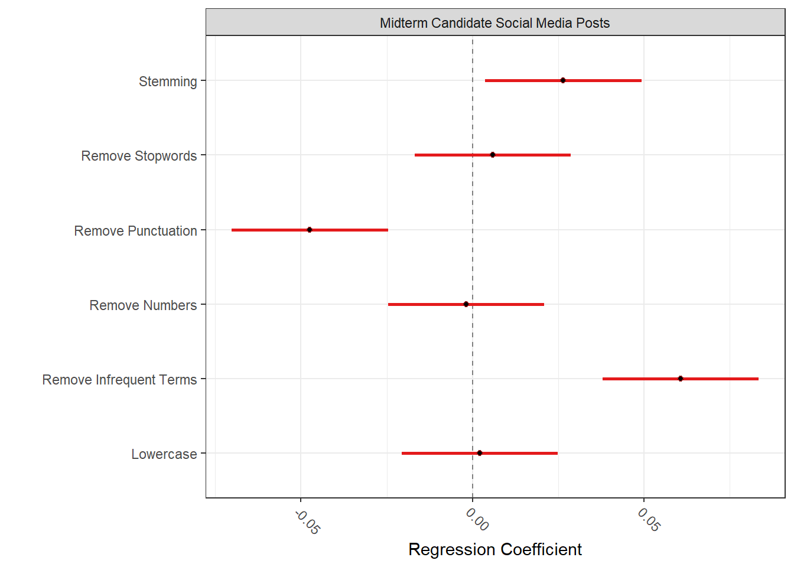

setwd("C:/Users/helen/OneDrive/Documents/Georgetown/F2025/text_analysis/problem-set-01-2025-helenw566/")
pacman::p_load(
dplyr,
purrr,
tidyr,
ggwordcloud,
quanteda,
quanteda.textstats,
preText,
tidytext,
quanteda.sentiment,
quanteda.dictionaries
)Text as Data: Problem Set 01
Instructions
To complete this homework, you have two options.
You can either complete this assignment using a dataset of your choice. This is a great opportunity for you to start working with a dataset that you can potentially use for your final project.
Your second option is to this dataset of social media posts from political candidates running for Congress during the 2022 U.S. Midterm election.
You can download the dataset here
To know more about the dataset, read and cite this paper: https://journals.sagepub.com/doi/full/10.1177/20563051251337541
If you want say thanks to the people who collected and shared this data with us for this class, please send a email to my colleague Maggie MacDonald
IMPORTANT: Remember to NOT commit your data to github. Github does not allow you to push large datasets to remote repositories. If you commit your dataset, you will need to reset your commit, and that’s always a bit of work. In addition, remember that your notebook should be compiled with the results of the code blocks.
Gen AI Use:
ChatGPT was consulted to deal with memory issues related to calling multiple textstat_simil(). Code was edited in response to reduce memory use, main changes being computing only one similarity matrix rather than 10 (1 for each reference document) and to see which similarity measure would be more memory-efficient. Also was consulted for Q6.2 in regards of how to run KIWC.
Question 1
Take a small a sample of your documents and read them carefully. This sample doesn’t need to be random. Select cases that are more interesting, and close to your theoretical interest in this dataset. What are you thoughts about these documents? What did you learn after reading them?
# read in file
df <- read.csv("data/midterm_candidates_labeled_all_May05.csv")
# look at a random sample
df %>%
slice_sample(n = 25) %>%
pull(text) [1] "Congratulations Rev. @KWCosby on your 43rd Pastoral Anniversary as the leader of @ssclive! It was an honor to be there today and to present you with a citation from the Kentucky General Assembly to mark the occasion. https://t.co/PHXkhhdC3E"
[2] "doesn't matter if you're Republican or Democrat this is unacceptable people's lives are on the line and what are Joe Biden and Patty Murray doing about it buying electric cars for rich people I know what it's like to be down and out and lost in a system that cares more about serving itself than serving the people it's not just indefensible it's immoral and putting people first is why I'm running for Senate I'm Tiffany Smiley and I approve this message"
[3] "@Madame_Bovaray @RepYoungKim thank you!"
[4] "And the Pulitzer Prize for Politician-Worshipping Contortions goes to……. https://t.co/qkmNrr0Wuw"
[5] "6 more years! Let's win this."
[6] "@YetiMoose Over 1 million USAmerican lives have been lost to COVID alone. THAT is the tragedy.\n\nFocus.\n\nAmerican lives are worth saving."
[7] "Looking forward to attending the Candidate Forum next week in Queens! #DebateMeAOC https://t.co/QKwCOroscx"
[8] "Come to our Town Hall next Wed. Oct 26th in Byron Center. I look forward to meeting you!\n\nRSVP: https://www.votejohngibbs.com/event-details/byron-center-town-hall"
[9] "@INDems @tommcdermottjr @votezenai @TheDestinyWells @jessica4indiana @allencountydem @LaPorteCoDems @ktchncabinetcd2 🚨🚨Updated time for @LaPorteCoDems Stop. 2pm CT https://t.co/ThwF4YopE0"
[10] "🚨 🚨 🚨 BREAKING🚨 🚨 🚨 Brad Pfaff just announced the location for his next sweet rally with all of his motivated supporters. Please RSVP as soon as possible, there is only room for both of you."
[11] "Thank you, Packers TE Paul Coffman, for standing with me in this fight for freedom. \n\nWe are going to need all hands on deck this November 8th to ensure we can keep Wisconsin Red. Visit https://t.co/Krb2cgSXUH to make a plan to get out and vote! https://t.co/a6AGWA9zyj"
[12] "Joe Biden’s Far Left policies have caused an energy crisis in America. The quickest way to lower gas prices is to unleash American energy independence - One of the many reasons why Republicans must win back the House to Save America!"
[13] "#Educators, #Students, #Administrators, And Families Will Gain Real Educational Leadership In The Second Congressional District! #AR02 \n#HBCU #EducationConsultant #Education #HigherEducation #PreK #SecondaryEducation #ARPX #DEI #ProfessionalDevelopment #ArkEducation https://t.co/3j45UeXvtj"
[14] "@elonmusk @Rainmaker1973 😇"
[15] "It was my honor to address the WNY Association of Retired Law Enforcement Breakfast and introduce an NYPD Hero & the next Lieutenant Governor of New York, Alison Esposito! Thank you to President Paul Beakman & all our retired law enforcement members for your years of selfless service to the people of NY. #BackTheBlue #NY23"
[16] "#WhereIsGUY Greetings…Reading, Wyomissing & Berwyn. Pumpkin-Paloma @goggleworks 🎃; #OldSchool street-corner rally Wyomissing & #FaithAndBlue @ CityPark—&, E-A-G-L-E-S tailgate @ #30Main. The common-theme: adults are trying to push-on for their kids. I’m offering #Hope https://t.co/Y7KQxTKO6x"
[17] "I love October… Time to #WinForVin"
[18] "Today Chef Peter at Panini Grill unveiled the “Malliotakis American Dream Panini” sautéed pulled pork, ham, feta with dolmades (stuffed grape leaves) garnish…👍💯"
[19] "@SarahUnsicker Thanks!"
[20] "This you?? https://t.co/igzRRZDUcr https://t.co/HU4CYw225Z"
[21] "A star is born - congratulations Weston https://t.co/xbIItqkarq"
[22] "Check out my interview with American Adversaries here: youtube.com/watch:=:https://www.youtube.com/?v=dJlXrRiJQO4. The mission of our campaign has been broadcasting all across Osceola, Orange and Polk County and people are ready for CHANGE. ScottyMooreForCongress.com #TakeBackTheHouse #FirePelosi #SaveAmerica #TeamScotty"
[23] "GREAT turnout in support of #TeamHerschel in Macon! Georgians across the state are excited for Election Day, and so far, breaking every early voting record in the book. If you want to make sure your voice is heard... VOTE!! >> https://t.co/AS8wSwrDJQ https://t.co/WMzMb7SRcP"
[24] "Thank you to the volunteers who came out to the #SingletarySuperSaturday event in the Town of Irondequoit. We are getting our message out about bringing common sense back to our everyday lives. Appreciate you all. #17Days \n\nwww.singletary4congress.com"
[25] "No surprise a top (and pathetic) Biden official John Kerry was overseas spending time with an anti-American narco-trafficking marxist dictator like Maduro https://t.co/50wqVEEATU" The content of the documents seem to vary widely–while largely written with a political agenda in mind, the texts seem to include everything from descriptive statistics, personal attacks against select politicians, support for political allies, calls of action for specific agendas, dissemination of campaign ideals/logistics, personal social interactions, etc. As expected from social media data, there’s liberal use of hashtags, emojis, referencing to specific accounts, and links, which will have to be considered during preprocessing.
Question 2
Tokenize your documents and pre-process them, removing any “extraneous” content you noticed in closely reading a sample of your documents. What content have you removed and why? Any pre-processing steps from what you saw in class that you consider not to use here?
df_corpus <- df %>%
#removing NA text
filter(!is.na(text)) %>%
#convert to corpus
corpus(text_field = "text") %>%
#remove punctuation and numbers
tokens(
remove_punct = TRUE,
remove_numbers = TRUE,
verbose = TRUE
) %>%
#lowercase
tokens_tolower() %>%
#remove stopwords
tokens_remove(stopwords("en")) %>%
#stemming
tokens_wordstem() %>%
#convert to dfm
dfm() Creating a tokens from a corpus object... ...starting tokenization ...tokenizing 1 of 2 blocks ...preserving hyphens ...preserving elisions ...preserving social media tags (#, @) ...tokenizing 2 of 2 blocks ...preserving hyphens ...preserving elisions ...preserving social media tags (#, @) ...removing separators, punctuation, numbers ...174,893 unique types ...complete, elapsed time: 19.3 seconds.Finished constructing tokens from 134,529 documentsdf_corpus_trim <- df_corpus %>%
#trim for common and rare words
dfm_trim(min_docfreq = 0.0005,
max_docfreq = 0.99,
docfreq_type ="prop",
verbose = TRUE) dfm_trim() changed from 141,296 features (134,529 documents) to 3,619 features (134,529 documents)In this case, I primarily removed punctuation, numbers, stop words, and also trimmed the document to remove common words and rare words. I also did some equivalence mapping via stemming. While removing symbols were an option, given that we’re working with social media data, I thought keep hashtags and @s could allow us to retain important context so I retained those. I also avoid lemmatization as I already had conducted stemming and I did not want to reduce the complexity of the document too much by doing both. When trimming the document, I applied a much stricter bench mark for minimum document frequency versus maximum document frequency. While playing around with different options, I noticed that minimum document frequency appeared to play a more significant role in trimming (i.e. changing max_docfreq from 0.99 to 0.999 while holding min_docfreq constant had no effect while changing min_docfreq from 0.0001 to 0.0005 while holding max_docfreq constant led to a change from 9947 features to 3619). To reduce noise and to reduce computational expense, I took on a moderate approach to document trimming.
Question 3
Using Danny and Spirling’s Pretext, tell me which of the pre-processing steps makes a more substantive difference in the data transformation? Would you keep all these steps or would you follow the PreText recommendations? Use a sample of the data to solve this question.
#preprocessing combinations
preTextDoc <- factorial_preprocessing(
df %>% filter(!is.na(text)) %>% slice_sample(n = 100) %>% corpus(text_field = "text"),
use_ngrams = F,
infrequent_term_threshold = 0.2
)Preprocessing 100 documents 64 different ways...
Currently working on combination 1 of 64 Creating a dfm from a tokens object... ...lowercasing ...complete, elapsed time: 0.02 seconds.Finished constructing a 100 x 1,041 sparse dfm.Removing 1040 of 1041 total terms that appeared in less than 20 documents.
Currently working on combination 2 of 64 Creating a dfm from a tokens object... ...lowercasing ...complete, elapsed time: 0 seconds.Finished constructing a 100 x 1,064 sparse dfm.Removing 1060 of 1064 total terms that appeared in less than 20 documents.
Currently working on combination 3 of 64 Creating a dfm from a tokens object... ...lowercasing ...complete, elapsed time: 0.01 seconds.Finished constructing a 100 x 1,063 sparse dfm.Removing 1062 of 1063 total terms that appeared in less than 20 documents.
Currently working on combination 4 of 64 Creating a dfm from a tokens object... ...lowercasing ...complete, elapsed time: 0 seconds.Finished constructing a 100 x 1,086 sparse dfm.Removing 1082 of 1086 total terms that appeared in less than 20 documents.
Currently working on combination 5 of 64 Creating a dfm from a tokens object... ...lowercasing ...complete, elapsed time: 0.02 seconds.Finished constructing a 100 x 1,048 sparse dfm.Removing 1047 of 1048 total terms that appeared in less than 20 documents.
Currently working on combination 6 of 64 Creating a dfm from a tokens object... ...lowercasing ...complete, elapsed time: 0.01 seconds.Finished constructing a 100 x 1,071 sparse dfm.Removing 1067 of 1071 total terms that appeared in less than 20 documents.
Currently working on combination 7 of 64 Creating a dfm from a tokens object... ...lowercasing ...complete, elapsed time: 0.01 seconds.Finished constructing a 100 x 1,070 sparse dfm.Removing 1069 of 1070 total terms that appeared in less than 20 documents.
Currently working on combination 8 of 64 Creating a dfm from a tokens object... ...lowercasing ...complete, elapsed time: 0.02 seconds.Finished constructing a 100 x 1,093 sparse dfm.Removing 1089 of 1093 total terms that appeared in less than 20 documents.
Currently working on combination 9 of 64 Creating a dfm from a tokens object... ...lowercasing ...complete, elapsed time: 0.01 seconds.Finished constructing a 100 x 1,145 sparse dfm.Removing 1145 of 1145 total terms that appeared in less than 20 documents.
Currently working on combination 10 of 64 Creating a dfm from a tokens object... ...lowercasing ...complete, elapsed time: 0.01 seconds.Finished constructing a 100 x 1,168 sparse dfm.Removing 1165 of 1168 total terms that appeared in less than 20 documents.
Currently working on combination 11 of 64 Creating a dfm from a tokens object... ...lowercasing ...complete, elapsed time: 0.01 seconds.Finished constructing a 100 x 1,167 sparse dfm.Removing 1167 of 1167 total terms that appeared in less than 20 documents.
Currently working on combination 12 of 64 Creating a dfm from a tokens object... ...lowercasing ...complete, elapsed time: 0.01 seconds.Finished constructing a 100 x 1,190 sparse dfm.Removing 1187 of 1190 total terms that appeared in less than 20 documents.
Currently working on combination 13 of 64 Creating a dfm from a tokens object... ...lowercasing ...complete, elapsed time: 0.02 seconds.Finished constructing a 100 x 1,145 sparse dfm.Removing 1145 of 1145 total terms that appeared in less than 20 documents.
Currently working on combination 14 of 64 Creating a dfm from a tokens object... ...lowercasing ...complete, elapsed time: 0 seconds.Finished constructing a 100 x 1,168 sparse dfm.Removing 1165 of 1168 total terms that appeared in less than 20 documents.
Currently working on combination 15 of 64 Creating a dfm from a tokens object... ...lowercasing ...complete, elapsed time: 0.02 seconds.Finished constructing a 100 x 1,167 sparse dfm.Removing 1167 of 1167 total terms that appeared in less than 20 documents.
Currently working on combination 16 of 64 Creating a dfm from a tokens object... ...lowercasing ...complete, elapsed time: 0.02 seconds.Finished constructing a 100 x 1,190 sparse dfm.Removing 1187 of 1190 total terms that appeared in less than 20 documents.
Currently working on combination 17 of 64 Creating a dfm from a tokens object... ...lowercasing ...complete, elapsed time: 0 seconds.Finished constructing a 100 x 1,145 sparse dfm.Removing 1130 of 1145 total terms that appeared in less than 20 documents.
Currently working on combination 18 of 64 Creating a dfm from a tokens object... ...lowercasing ...complete, elapsed time: 0 seconds.Finished constructing a 100 x 1,168 sparse dfm.Removing 1150 of 1168 total terms that appeared in less than 20 documents.
Currently working on combination 19 of 64 Creating a dfm from a tokens object... ...lowercasing ...complete, elapsed time: 0.01 seconds.Finished constructing a 100 x 1,167 sparse dfm.Removing 1152 of 1167 total terms that appeared in less than 20 documents.
Currently working on combination 20 of 64 Creating a dfm from a tokens object... ...lowercasing ...complete, elapsed time: 0 seconds.Finished constructing a 100 x 1,190 sparse dfm.Removing 1172 of 1190 total terms that appeared in less than 20 documents.
Currently working on combination 21 of 64 Creating a dfm from a tokens object... ...lowercasing ...complete, elapsed time: 0.01 seconds.Finished constructing a 100 x 1,152 sparse dfm.Removing 1137 of 1152 total terms that appeared in less than 20 documents.
Currently working on combination 22 of 64 Creating a dfm from a tokens object... ...lowercasing ...complete, elapsed time: 0.02 seconds.Finished constructing a 100 x 1,175 sparse dfm.Removing 1157 of 1175 total terms that appeared in less than 20 documents.
Currently working on combination 23 of 64 Creating a dfm from a tokens object... ...lowercasing ...complete, elapsed time: 0.01 seconds.Finished constructing a 100 x 1,174 sparse dfm.Removing 1159 of 1174 total terms that appeared in less than 20 documents.
Currently working on combination 24 of 64 Creating a dfm from a tokens object... ...lowercasing ...complete, elapsed time: 0.01 seconds.Finished constructing a 100 x 1,197 sparse dfm.Removing 1179 of 1197 total terms that appeared in less than 20 documents.
Currently working on combination 25 of 64 Creating a dfm from a tokens object... ...lowercasing ...complete, elapsed time: 0.01 seconds.Finished constructing a 100 x 1,254 sparse dfm.Removing 1240 of 1254 total terms that appeared in less than 20 documents.
Currently working on combination 26 of 64 Creating a dfm from a tokens object... ...lowercasing ...complete, elapsed time: 0 seconds.Finished constructing a 100 x 1,277 sparse dfm.Removing 1260 of 1277 total terms that appeared in less than 20 documents.
Currently working on combination 27 of 64 Creating a dfm from a tokens object... ...lowercasing ...complete, elapsed time: 0 seconds.Finished constructing a 100 x 1,276 sparse dfm.Removing 1262 of 1276 total terms that appeared in less than 20 documents.
Currently working on combination 28 of 64 Creating a dfm from a tokens object... ...lowercasing ...complete, elapsed time: 0 seconds.Finished constructing a 100 x 1,299 sparse dfm.Removing 1282 of 1299 total terms that appeared in less than 20 documents.
Currently working on combination 29 of 64 Creating a dfm from a tokens object... ...lowercasing ...complete, elapsed time: 0.02 seconds.Finished constructing a 100 x 1,254 sparse dfm.Removing 1240 of 1254 total terms that appeared in less than 20 documents.
Currently working on combination 30 of 64 Creating a dfm from a tokens object... ...lowercasing ...complete, elapsed time: 0 seconds.Finished constructing a 100 x 1,277 sparse dfm.Removing 1260 of 1277 total terms that appeared in less than 20 documents.
Currently working on combination 31 of 64 Creating a dfm from a tokens object... ...lowercasing ...complete, elapsed time: 0.02 seconds.Finished constructing a 100 x 1,276 sparse dfm.Removing 1262 of 1276 total terms that appeared in less than 20 documents.
Currently working on combination 32 of 64 Creating a dfm from a tokens object... ...lowercasing ...complete, elapsed time: 0 seconds.Finished constructing a 100 x 1,299 sparse dfm.Removing 1282 of 1299 total terms that appeared in less than 20 documents.
Currently working on combination 33 of 64 Creating a dfm from a tokens object... ...lowercasing ...complete, elapsed time: 0.02 seconds.Finished constructing a 100 x 1,041 sparse dfm.Currently working on combination 34 of 64 Creating a dfm from a tokens object... ...lowercasing ...complete, elapsed time: 0 seconds.Finished constructing a 100 x 1,064 sparse dfm.Currently working on combination 35 of 64 Creating a dfm from a tokens object... ...lowercasing ...complete, elapsed time: 0.01 seconds.Finished constructing a 100 x 1,063 sparse dfm.Currently working on combination 36 of 64 Creating a dfm from a tokens object... ...lowercasing ...complete, elapsed time: 0.02 seconds.Finished constructing a 100 x 1,086 sparse dfm.Currently working on combination 37 of 64 Creating a dfm from a tokens object... ...lowercasing ...complete, elapsed time: 0.01 seconds.Finished constructing a 100 x 1,048 sparse dfm.Currently working on combination 38 of 64 Creating a dfm from a tokens object... ...lowercasing ...complete, elapsed time: 0.02 seconds.Finished constructing a 100 x 1,071 sparse dfm.Currently working on combination 39 of 64 Creating a dfm from a tokens object... ...lowercasing ...complete, elapsed time: 0.01 seconds.Finished constructing a 100 x 1,070 sparse dfm.Currently working on combination 40 of 64 Creating a dfm from a tokens object... ...lowercasing ...complete, elapsed time: 0 seconds.Finished constructing a 100 x 1,093 sparse dfm.Currently working on combination 41 of 64 Creating a dfm from a tokens object... ...lowercasing ...complete, elapsed time: 0.03 seconds.Finished constructing a 100 x 1,145 sparse dfm.Currently working on combination 42 of 64 Creating a dfm from a tokens object... ...lowercasing ...complete, elapsed time: 0.01 seconds.Finished constructing a 100 x 1,168 sparse dfm.Currently working on combination 43 of 64 Creating a dfm from a tokens object... ...lowercasing ...complete, elapsed time: 0 seconds.Finished constructing a 100 x 1,167 sparse dfm.Currently working on combination 44 of 64 Creating a dfm from a tokens object... ...lowercasing ...complete, elapsed time: 0 seconds.Finished constructing a 100 x 1,190 sparse dfm.Currently working on combination 45 of 64 Creating a dfm from a tokens object... ...lowercasing ...complete, elapsed time: 0.02 seconds.Finished constructing a 100 x 1,145 sparse dfm.Currently working on combination 46 of 64 Creating a dfm from a tokens object... ...lowercasing ...complete, elapsed time: 0.01 seconds.Finished constructing a 100 x 1,168 sparse dfm.Currently working on combination 47 of 64 Creating a dfm from a tokens object... ...lowercasing ...complete, elapsed time: 0.01 seconds.Finished constructing a 100 x 1,167 sparse dfm.Currently working on combination 48 of 64 Creating a dfm from a tokens object... ...lowercasing ...complete, elapsed time: 0.02 seconds.Finished constructing a 100 x 1,190 sparse dfm.Currently working on combination 49 of 64 Creating a dfm from a tokens object... ...lowercasing ...complete, elapsed time: 0.02 seconds.Finished constructing a 100 x 1,145 sparse dfm.Currently working on combination 50 of 64 Creating a dfm from a tokens object... ...lowercasing ...complete, elapsed time: 0.01 seconds.Finished constructing a 100 x 1,168 sparse dfm.Currently working on combination 51 of 64 Creating a dfm from a tokens object... ...lowercasing ...complete, elapsed time: 0.01 seconds.Finished constructing a 100 x 1,167 sparse dfm.Currently working on combination 52 of 64 Creating a dfm from a tokens object... ...lowercasing ...complete, elapsed time: 0.02 seconds.Finished constructing a 100 x 1,190 sparse dfm.Currently working on combination 53 of 64 Creating a dfm from a tokens object... ...lowercasing ...complete, elapsed time: 0.02 seconds.Finished constructing a 100 x 1,152 sparse dfm.Currently working on combination 54 of 64 Creating a dfm from a tokens object... ...lowercasing ...complete, elapsed time: 0 seconds.Finished constructing a 100 x 1,175 sparse dfm.Currently working on combination 55 of 64 Creating a dfm from a tokens object... ...lowercasing ...complete, elapsed time: 0.02 seconds.Finished constructing a 100 x 1,174 sparse dfm.Currently working on combination 56 of 64 Creating a dfm from a tokens object... ...lowercasing ...complete, elapsed time: 0 seconds.Finished constructing a 100 x 1,197 sparse dfm.Currently working on combination 57 of 64 Creating a dfm from a tokens object... ...lowercasing ...complete, elapsed time: 0.02 seconds.Finished constructing a 100 x 1,254 sparse dfm.Currently working on combination 58 of 64 Creating a dfm from a tokens object... ...lowercasing ...complete, elapsed time: 0 seconds.Finished constructing a 100 x 1,277 sparse dfm.Currently working on combination 59 of 64 Creating a dfm from a tokens object... ...lowercasing ...complete, elapsed time: 0.02 seconds.Finished constructing a 100 x 1,276 sparse dfm.Currently working on combination 60 of 64 Creating a dfm from a tokens object... ...lowercasing ...complete, elapsed time: 0.02 seconds.Finished constructing a 100 x 1,299 sparse dfm.Currently working on combination 61 of 64 Creating a dfm from a tokens object... ...lowercasing ...complete, elapsed time: 0.02 seconds.Finished constructing a 100 x 1,254 sparse dfm.Currently working on combination 62 of 64 Creating a dfm from a tokens object... ...lowercasing ...complete, elapsed time: 0.05 seconds.Finished constructing a 100 x 1,277 sparse dfm.Currently working on combination 63 of 64 Creating a dfm from a tokens object... ...lowercasing ...complete, elapsed time: 0.01 seconds.Finished constructing a 100 x 1,276 sparse dfm.Currently working on combination 64 of 64 Creating a dfm from a tokens object... ...lowercasing ...complete, elapsed time: 0.02 seconds.Finished constructing a 100 x 1,299 sparse dfm.#getting pretext scores
preTextResults <- preText(preTextDoc,
dataset_name = "Midterm Candidate Social Media Posts",
distance_method = "cosine",
num_comparisons = 20)Generating document distances...
Currently working on dfm 1 of 64
Complete in: 0.09 seconds...
Currently working on dfm 2 of 64
Complete in: 0.03 seconds...
Currently working on dfm 3 of 64
Complete in: 0.04 seconds...
Currently working on dfm 4 of 64
Complete in: 0.03 seconds...
Currently working on dfm 5 of 64
Complete in: 0.03 seconds...
Currently working on dfm 6 of 64
Complete in: 0.04 seconds...
Currently working on dfm 7 of 64
Complete in: 0.04 seconds...
Currently working on dfm 8 of 64
Complete in: 0.03 seconds...
Currently working on dfm 9 of 64 Warning in stats::cmdscale(distances, k = dimensions): only 0 of the first 2
eigenvalues are > 0Complete in: 0.03 seconds...
Currently working on dfm 10 of 64
Complete in: 0.03 seconds...
Currently working on dfm 11 of 64 Warning in stats::cmdscale(distances, k = dimensions): only 0 of the first 2
eigenvalues are > 0Complete in: 0.03 seconds...
Currently working on dfm 12 of 64
Complete in: 0.05 seconds...
Currently working on dfm 13 of 64 Warning in stats::cmdscale(distances, k = dimensions): only 0 of the first 2
eigenvalues are > 0Complete in: 0.03 seconds...
Currently working on dfm 14 of 64
Complete in: 0.03 seconds...
Currently working on dfm 15 of 64 Warning in stats::cmdscale(distances, k = dimensions): only 0 of the first 2
eigenvalues are > 0Complete in: 0.03 seconds...
Currently working on dfm 16 of 64
Complete in: 0.03 seconds...
Currently working on dfm 17 of 64
Complete in: 0.08 seconds...
Currently working on dfm 18 of 64
Complete in: 0.03 seconds...
Currently working on dfm 19 of 64
Complete in: 0.03 seconds...
Currently working on dfm 20 of 64
Complete in: 0.03 seconds...
Currently working on dfm 21 of 64
Complete in: 0.04 seconds...
Currently working on dfm 22 of 64
Complete in: 0.03 seconds...
Currently working on dfm 23 of 64
Complete in: 0.04 seconds...
Currently working on dfm 24 of 64
Complete in: 0.04 seconds...
Currently working on dfm 25 of 64
Complete in: 0.03 seconds...
Currently working on dfm 26 of 64
Complete in: 0.04 seconds...
Currently working on dfm 27 of 64
Complete in: 0.03 seconds...
Currently working on dfm 28 of 64
Complete in: 0.04 seconds...
Currently working on dfm 29 of 64
Complete in: 0.04 seconds...
Currently working on dfm 30 of 64
Complete in: 0.03 seconds...
Currently working on dfm 31 of 64
Complete in: 0.04 seconds...
Currently working on dfm 32 of 64
Complete in: 0.03 seconds...
Currently working on dfm 33 of 64
Complete in: 0.04 seconds...
Currently working on dfm 34 of 64
Complete in: 0.03 seconds...
Currently working on dfm 35 of 64
Complete in: 0.05 seconds...
Currently working on dfm 36 of 64
Complete in: 0.06 seconds...
Currently working on dfm 37 of 64
Complete in: 0.05 seconds...
Currently working on dfm 38 of 64
Complete in: 0.03 seconds...
Currently working on dfm 39 of 64
Complete in: 0.03 seconds...
Currently working on dfm 40 of 64
Complete in: 0.05 seconds...
Currently working on dfm 41 of 64
Complete in: 0.03 seconds...
Currently working on dfm 42 of 64
Complete in: 0.03 seconds...
Currently working on dfm 43 of 64
Complete in: 0.05 seconds...
Currently working on dfm 44 of 64
Complete in: 0.03 seconds...
Currently working on dfm 45 of 64
Complete in: 0.03 seconds...
Currently working on dfm 46 of 64
Complete in: 0.05 seconds...
Currently working on dfm 47 of 64
Complete in: 0.03 seconds...
Currently working on dfm 48 of 64
Complete in: 0.03 seconds...
Currently working on dfm 49 of 64
Complete in: 0.05 seconds...
Currently working on dfm 50 of 64
Complete in: 0.05 seconds...
Currently working on dfm 51 of 64
Complete in: 0.03 seconds...
Currently working on dfm 52 of 64
Complete in: 0.04 seconds...
Currently working on dfm 53 of 64
Complete in: 0.03 seconds...
Currently working on dfm 54 of 64
Complete in: 0.05 seconds...
Currently working on dfm 55 of 64
Complete in: 0.06 seconds...
Currently working on dfm 56 of 64
Complete in: 0.05 seconds...
Currently working on dfm 57 of 64
Complete in: 0.03 seconds...
Currently working on dfm 58 of 64
Complete in: 0.03 seconds...
Currently working on dfm 59 of 64
Complete in: 0.05 seconds...
Currently working on dfm 60 of 64
Complete in: 0.05 seconds...
Currently working on dfm 61 of 64
Complete in: 0.03 seconds...
Currently working on dfm 62 of 64
Complete in: 0.05 seconds...
Currently working on dfm 63 of 64
Complete in: 0.03 seconds...
Currently working on dfm 64 of 64
Complete in: 0.04 seconds...
Generating preText Scores...
Currently working on DFM: 1 of 64
Complete in: 0.04 seconds...
Currently working on DFM: 2 of 64
Complete in: 0.04 seconds...
Currently working on DFM: 3 of 64
Complete in: 0.02 seconds...
Currently working on DFM: 4 of 64
Complete in: 0.06 seconds...
Currently working on DFM: 5 of 64
Complete in: 0.02 seconds...
Currently working on DFM: 6 of 64
Complete in: 0.04 seconds...
Currently working on DFM: 7 of 64
Complete in: 0.03 seconds...
Currently working on DFM: 8 of 64
Complete in: 0.05 seconds...
Currently working on DFM: 9 of 64
Complete in: 0.02 seconds...
Currently working on DFM: 10 of 64
Complete in: 0.08 seconds...
Currently working on DFM: 11 of 64
Complete in: 0.03 seconds...
Currently working on DFM: 12 of 64
Complete in: 0.01 seconds...
Currently working on DFM: 13 of 64
Complete in: 0.05 seconds...
Currently working on DFM: 14 of 64
Complete in: 0.01 seconds...
Currently working on DFM: 15 of 64
Complete in: 0.05 seconds...
Currently working on DFM: 16 of 64
Complete in: 0.06 seconds...
Currently working on DFM: 17 of 64
Complete in: 0.07 seconds...
Currently working on DFM: 18 of 64
Complete in: 0.01 seconds...
Currently working on DFM: 19 of 64
Complete in: 0.05 seconds...
Currently working on DFM: 20 of 64
Complete in: 0.01 seconds...
Currently working on DFM: 21 of 64
Complete in: 0.05 seconds...
Currently working on DFM: 22 of 64
Complete in: 0.02 seconds...
Currently working on DFM: 23 of 64
Complete in: 0.04 seconds...
Currently working on DFM: 24 of 64
Complete in: 0.04 seconds...
Currently working on DFM: 25 of 64
Complete in: 0.01 seconds...
Currently working on DFM: 26 of 64
Complete in: 0.05 seconds...
Currently working on DFM: 27 of 64
Complete in: 0.01 seconds...
Currently working on DFM: 28 of 64
Complete in: 0.05 seconds...
Currently working on DFM: 29 of 64
Complete in: 0.02 seconds...
Currently working on DFM: 30 of 64
Complete in: 0.04 seconds...
Currently working on DFM: 31 of 64
Complete in: 0.03 seconds...
Currently working on DFM: 32 of 64
Complete in: 0.07 seconds...
Currently working on DFM: 33 of 64
Complete in: 0.01 seconds...
Currently working on DFM: 34 of 64
Complete in: 0.05 seconds...
Currently working on DFM: 35 of 64
Complete in: 0.03 seconds...
Currently working on DFM: 36 of 64
Complete in: 0.05 seconds...
Currently working on DFM: 37 of 64
Complete in: 0.01 seconds...
Currently working on DFM: 38 of 64
Complete in: 0.03 seconds...
Currently working on DFM: 39 of 64
Complete in: 0.05 seconds...
Currently working on DFM: 40 of 64
Complete in: 0.02 seconds...
Currently working on DFM: 41 of 64
Complete in: 0.04 seconds...
Currently working on DFM: 42 of 64
Complete in: 0.03 seconds...
Currently working on DFM: 43 of 64
Complete in: 0.05 seconds...
Currently working on DFM: 44 of 64
Complete in: 0.03 seconds...
Currently working on DFM: 45 of 64
Complete in: 0.05 seconds...
Currently working on DFM: 46 of 64
Complete in: 0.02 seconds...
Currently working on DFM: 47 of 64
Complete in: 0.04 seconds...
Currently working on DFM: 48 of 64
Complete in: 0.02 seconds...
Currently working on DFM: 49 of 64
Complete in: 0.04 seconds...
Currently working on DFM: 50 of 64
Complete in: 0.04 seconds...
Currently working on DFM: 51 of 64
Complete in: 0.01 seconds...
Currently working on DFM: 52 of 64
Complete in: 0.05 seconds...
Currently working on DFM: 53 of 64
Complete in: 0.03 seconds...
Currently working on DFM: 54 of 64
Complete in: 0.03 seconds...
Currently working on DFM: 55 of 64
Complete in: 0.01 seconds...
Currently working on DFM: 56 of 64
Complete in: 0.31 seconds...
Currently working on DFM: 57 of 64
Complete in: 0.02 seconds...
Currently working on DFM: 58 of 64
Complete in: 0.05 seconds...
Currently working on DFM: 59 of 64
Complete in: 0.01 seconds...
Currently working on DFM: 60 of 64
Complete in: 0.05 seconds...
Currently working on DFM: 61 of 64
Complete in: 0.02 seconds...
Currently working on DFM: 62 of 64
Complete in: 0.04 seconds...
Currently working on DFM: 63 of 64
Complete in: 0.02 seconds...
Currently working on DFM: 64 of 64
Complete in: 0 seconds...
Generating regression results..
The R^2 for this model is: 0.4718205
Regression results (negative coefficients imply less risk):
Variable Coefficient SE
1 Intercept 0.151 0.016
2 Remove Punctuation -0.047 0.012
3 Remove Numbers -0.002 0.012
4 Lowercase 0.002 0.012
5 Stemming 0.026 0.012
6 Remove Stopwords 0.006 0.012
7 Remove Infrequent Terms 0.061 0.012
Complete in: 4.97 seconds...# regression
regression_coefficient_plot(preTextResults,
remove_intercept = TRUE)Warning in ggplot2::geom_point(ggplot2::aes(y = Variable, x = Coefficient), :
Ignoring unknown parameters: `linewidth`
In this case, it appears “Remove Infrequent Terms” is the one that will lead to the most substantive differences when it comes to preprocessing, as it is the only one that is both (1) positive and (2) significantly different. The rest appear to result in nonsignificant differences. In this case, my approach largely conforms with preText’s analysis. I’m using largely the same preprocessing approach and I am also taking a moderate approach to removing infrequent terms. However, I would elect to still remove some infrequent terms (rather than avoid taking them out altogether) given the high dimensionality of the current dataset. Retaining all 141,296 tokens is impractical and too computationally expensive to really be a feasible option.
Question 4
Pick an important source of variation in your data (for example: date, author identity, location, etc.). Subset the data along this dimension, and discuss which words discriminate better each group. You can do this by using TF-IDF, PMI, log(share \(word_i\) in group a/share \(word_i\) in b), or create a measure similar to Ban’s article.
#checking options for variation
df_corpus_trim@docvars %>% colnames() [1] "docname_" "docid_" "segid_" "X"
[5] "created_at" "username" "name" "platform"
[9] "party_clean" "office_type" "office.name" "gender"
[13] "incumbent." "candidate.status" "wonprimary" "vote"
[17] "participation" "fundraising" "audience" "engagement"
[21] "election_denial" "trump_endorsed" #using tf-idf so see which words discriminate better for each group
tfidf_terms <- df_corpus_trim %>%
#performing tf-idf
dfm_tfidf(scheme_tf = "prop") %>%
#group by candidate status
dfm_group(candidate.status, force = TRUE) %>%
#convert and pivtot
convert(to = "data.frame") %>%
pivot_longer(
cols = !doc_id,
names_to = "word",
values_to = "tf_idf"
) %>%
rename(status = doc_id) %>%
group_by(status) %>%
#check top 10 words
arrange(desc(tf_idf)) %>%
slice_head(n = 10)
#plotting word clouds to visualize
tfidf_terms %>%
ggplot(aes(
label = word, color = tf_idf)
) +
geom_text_wordcloud() +
theme_minimal() +
facet_wrap(~status) +
labs(title = "Most Common Words by Election Denial Status") +
theme(
plot.title = element_text(face = "bold", hjust = 0.5)
) 
Here, I’m using “Candidate Status” as source of variation. We see that those who were on the ballot appear to be using language more centered on spurring voters to vote, notably having multiple references to “elect”, “day”, and “vote.” It also seemed to cater more towards thanking voters for their support. In contrast, candidates that were not on the ballot appeared more likely to use language centered around some kind of announcement, notably “announce” and the most common words seem to suggest that their declaration was tied to removing someone from office or “trump”, either as a result of his endorsement or otherwise.
Question 5
Create a dictionary (or use a pre-existing dictionary) to measure a topic of interest in your data. It can be anything, sentiment, tone, misinformation, any topic of interest. Label your documents, and visualize the prevalence of your classes.
#adding sentiment scores
sentiment_doc <- docvars(df_corpus_trim) %>%
#adding document id
mutate(doc_id = docnames(df_corpus_trim)) %>%
#adding dictionary counts
merge(
df_corpus_trim %>%
dfm_lookup(dictionary = data_dictionary_LSD2015[1:2]) %>%
convert(to = "data.frame"),
by = "doc_id"
)
sentiment_doc %>%
#determining top sentiment
mutate(
major_sentiment = ifelse(
positive > negative, "Positive", ifelse(
negative > positive, "Negative", "Neutral"
)
)
) %>%
group_by(major_sentiment) %>%
#counting documents by sentiment
summarise(count = n()) %>%
#plotting
ggplot() +
geom_col(aes(x = major_sentiment, y = count, fill = major_sentiment), alpha = 0.7) +
labs(
x = "Major Sentiment",
y = "Count",
title = "Major Sentiment across Social Media Posts by Count",
subtitle = "2022 Midterm Elections",
fill = "Sentiment"
) +
theme_minimal()
Question 6
Pick some documents (at least 10 for each class) that are exemplar (high probability) of being for each class of your dictionary. Read these documents. Now let’s try to augment a little your classifier.
set.seed(88)
#get documents with high prob
sample_sent <- sentiment_doc %>%
#only getting documents with one sentiment and high counts for it
filter((positive == 0 | negative == 0) & !(positive == 0 & negative == 0)) %>%
mutate(total = positive + negative) %>%
filter(total > 5) %>%
pivot_longer(
cols = c("positive", "negative"),
names_to = "class"
) %>%
filter(value != 0) %>%
group_by(class) %>%
#randomly select 10 for each class
slice_sample(n = 10)
#retrieve original text
sample_text <- df %>%
merge(
sample_sent,
by = "X",
all.y = T
) %>%
select(class, doc_id, X, text)
sample_text %>% pull(text) [1] "The Early Voting polls are still open for another week before Election Day on Nov. 8th! 🔴 As a Green Beret Veteran, a business owner, and a father, I know the important part Washington politics plays in all of our lives. I believe it is time we have truth and dignity in the House, not just political games or government overreach. I will work to end our continued inflation, strengthen our National Security, and get us closer to Energy Independence, because all Americans deserve better. Learn more about my plans for Congress here ↙️ https://www.harriganforcongress.com/"
[2] "This is a must read; \"Crime in 2020 was 60% lower than in 1980. The crime rate began consistently declining in the early 1990s and fell every year between 2001 and 2020. Both property and violent crimes reflect this long-term trend of decreasing crime. Property crime is down 63% since 1980, and violent crime is down 33%. Property crime per 100,000 people ranged from 1,460 in New York City to 6,128 in Memphis...Violent crime decreased since 1991 in 39 states and Washington, DC. It declined by more than 60% in New Jersey, New York, Florida, and Connecticut. Meanwhile, the violent crime rate more than doubled in North Dakota, Montana, and South Dakota.\""
[3] "Thank you for your courage and for putting your country first. Thank you for protecting our country, for your bravery, and for all that you do and have done to make this country safe. Wishing you a very Happy Veteran's day! #VeteransDay #VeteransDay2022"
[4] "Denise and I had such a great night visiting with so many friends and neighbors at the Bartholomew County Republicans Fall Dinner! 🇺🇸 \n\nOur local county parties are vital to the GOP’s success, and that’s why I’m always happy to lend a helping hand in their mission to elect Republicans up and down the ticket. \n\nRemember to get out and VOTE on November 8th! 🗳"
[5] "Roberta and I are extremely grateful for the support and friendship across the 8th District of Tennessee. \n\nIt is our greatest honor to serve this great state we all call home.\n\nThank you for your trust in us."
[6] "Happy Veterans Day! #NY21 is home to the largest number of veterans of any Congressional District in NY. I was honored to participate in today’s ceremony dedicating the Essex County Leathernecks Marine Corps League Monument in Crown Point! We thank & honor all of our veterans!🇺🇸"
[7] "The horrifying attack on Paul Pelosi is the result of extremist rhetoric that threatens both our democracy and the lives & families of those who step up to serve. Everyone--on both sides of the aisle--must condemn the conspiracy theories that motivate these assaults."
[8] "Alaskans voted for a better future, one where our fisheries are rehabilitated, our rights are preserved, and our families can afford to not only survive, but thrive. I’m happy they did. Now it’s time to make that a reality."
[9] "Yvette Herrell and her friends can’t defend her awful record in Congress, so they’re doing what they do best - lying to get ahead. So here’s the truth. Let’s win #NM02 and elect a real champion for the working class. https://t.co/c4hShu5yYu"
[10] "Thank you to everyone who made last night’s event at Georgia Blue Gallery so special! \n\nThank you to Georgia for hosting us, thank you to Byron Nicholai for your beautiful performance, and thank you to the artists who shared their art with us. #MaryForCongress https://t.co/9l6joOizMy"
[11] "No, any American except a sitting member of the US House or Senate can be indicted for war crimes if they commit one or more war crimes. But the worst war crime is aggression, and I focus on that. Presidents, Secretaries of State & \"Defense\", and judges.\nhttps://t.co/7riUJPharR https://t.co/8iweaELc6X"
[12] "I have no idea how many presidents must be impeached & removed for war crimes before the lesson finally sinks in: become the president, refuse to stop ongoing, illegal, immoral wars of aggression, get impeached & removed. Maybe it'll take only 2 or 3 presidents before they get it https://t.co/xoyzfX90Lh"
[13] "Thank you Narragansett Dems for supporting great candidates who care about working people. \n\nOil and drug companies might be trying to buy Allan Fung a congressional seat, but with your help we’ll keep #CD2 blue! https://t.co/9xt7wfwwh8"
[14] "Any dealmaking with this terrorist regime should be permanently dead.\n\nIran is funding terrorism across the globe, giving missiles & drones to Putin to commit war crimes in Ukraine, plotting to assassinate American officials, and murdering its own children, women & men. #alsen https://t.co/3YuBVUp47C"
[15] "@jackieraimo @Schneider4IL10 @MomsDemand @JudgeRochford @VoteJoyceMason @VoteVega22 @Carissa4LCB7 @RepSchneider Brads afraid to debate because of the truth.Careful who you endorse. I’ve fought for Moms, children and community. Brad looks to profit off pain and didn’t solve any problems. His sister in law shot up a school and he still has no empathy for gun violence victims. \n#loridann"
[16] ".@kdeleon continues to downplay his anti-Black, racist words & actions. He purposely distracts from their ploy to disenfranchise Black Angelenos.\n\nThis wasn’t just “condoning racist language,” it is blatant racism backed by racist policy.\nNow, more than ever, KDL must RESIGN. https://t.co/gFzo91YeTW"
[17] "Wishing you all a Happy Thanksgiving-a day of reflection to count our blessings with gratitude! I’m especially thankful for my family, friends & the many constituents I’ve come to know over the years who have made me a stronger, more dedicated public servant. God bless & enjoy! https://t.co/MmM6Z900Gd"
[18] "The government of Venezuela is deliberately releasing prisoners – including violent criminals convicted of murder and rape. Those same freed prisoners are in the illegal immigrant caravans marching to our border. https://t.co/jBfb7yc9tG"
[19] "Ilhan Omar cannot be allowed to return to congress! She has left us helpless! Our city is worse off than when she was elected! Look at the rampant crime, homelessness, and poverty invading our streets! She could have fixed these problems for our district, but she abandoned us! https://t.co/7QbiXIJs79"
[20] "I’m praying for Paul Pelosi and condemn violence against anyone, no matter who does it. After having my volunteers get assaulted and my family members’ lives threatened, I am disgusted by this violent attack. We need to hold these individuals accountable... https://t.co/ZDgDq0KLLB" Question 6.1
Using cosine similarity, grab the closest 10 documents to each reference document you read before. Read those. How well does the cosine similarity work? Try with another measure of distance. Anything interesting there?
Cosine
#computing cosine similarity in ref to docs
closest_docs <- textstat_simil(
df_corpus_trim,
y = df_corpus_trim[sample_sent$doc_id,],
margin = "documents",
method = "cosine"
) %>%
as.data.frame() %>%
group_by(document2) %>%
#take the top closest docs
arrange(desc(cosine)) %>%
slice_head(n = 10) %>%
rename(
doc = document1,
ref_doc = document2,
cosine = cosine
)
#add text and doc to docvars
docvars(df_corpus_trim, "text") <- df[df$X %in% docvars(df_corpus_trim)$X, "text"]
docvars(df_corpus_trim, "doc") <- df_corpus_trim@Dimnames["docs"]
#add text
closest_docs %>%
#adding text
merge(
docvars(df_corpus_trim) %>% select(doc, text),
by = "doc"
) %>%
#adding reference text
merge(
sample_text %>% rename(ref_doc = doc_id, ref_text = text),
by = "ref_doc",
all.x = T
) %>%
select(class, ref_doc, ref_text, doc, text) %>% View()Using cosine similarity, it appears that the top 10 most similar documents generally appear to have similar sentiments and/or matching topics to the original reference document. This appears somewhat dependent on the overall “extremism” of the original reference document. Reference document that appears more obvious positive or sentiment seem more likely to have “similar” documents that have matching sentiments. Similarly, reference documents that seem clearly about a specific topic appear to be more likely to have matching content across their “similar” documents. In contrast, reference documents that might use more common words or are more neutral in sentiment, seem to vary a lot in terms of their “similar documents.” In those cases, the similarities are harder to identify. Neither the content, tone, or overall sentiment seemed similar at first glance. For example, one reference document containing critiques on a specific politician was notably said to be “similar” to other documents that were notably more positive in sentiment–containing documents thanking constituents for their support. What is similar about these documents is not obviously apparent.
Correlation
#computing correlation in ref to docs
closest_docs_cor <- textstat_simil(
df_corpus_trim,
y = df_corpus_trim[sample_sent$doc_id,],
margin = "documents",
method = "correlation"
) %>%
as.data.frame() %>%
group_by(document2) %>%
#take the top closest docs
arrange(desc(correlation)) %>%
slice_head(n = 10) %>%
rename(
doc = document1,
ref_doc = document2,
correlation = correlation
)
#add text
closest_docs_cor %>%
#add text
merge(
docvars(df_corpus_trim) %>% select(doc, text),
by = "doc"
) %>%
#add ref text
merge(
sample_text %>% rename(ref_doc = doc_id, ref_text = text),
by = "ref_doc",
all.x = T
) %>%
select(class, ref_doc, ref_text, doc, text) %>% View()Here, I utilized correlation as an alternative measure of similarity. The results seem comparable with cosine similarity, with many of the same documents being listed as similar. Correlation introduces some new documents and omits others that cosine similarity had marked as similar but the new inclusions overall seem obvious in why they were considered similar. While some new additions are dubious, there are no more dubious than the one’s marked similar via cosine similarity.
Question 6.2
Now, check qualitative these documents. Take a look at the top features, keyword in Context, higher TF-IDF. Would you change anything in your dictionary now that you looked in these documents?
#check top features
topfeat <- dfm_subset(df_corpus_trim, subset = docnames(df_corpus_trim) %in% closest_docs$doc) %>% topfeatures()
topfeat thank amp vote crime famili day veteran war get us
69 56 53 52 46 42 41 40 39 39 #tf-idf
dfm_subset(df_corpus_trim, subset = docnames(df_corpus_trim) %in% closest_docs$doc) %>%
dfm_tfidf() %>%
topfeatures() amp crime veteran war vote thank republican
46.59582 41.04444 40.73089 39.73745 39.12268 38.23314 37.59221
pelosi counti day
36.37178 35.41569 33.15128 #keywords in context
kic <- as.data.frame(matrix(ncol = 7, nrow = 0))
for (word in names(topfeat)) {
#corpus of the similar documents, tokenize to meet kwic requirements
temp_corpus <- corpus(docvars(dfm_subset(df_corpus_trim, subset = docnames(df_corpus_trim) %in% closest_docs$doc))$text) %>%
tokens(remove_punct = TRUE,
remove_numbers = TRUE)
#compute kiwc
context <- kwic(temp_corpus, pattern = word, window = 5)
#add to df
kic <- rbind(kic, context)
}
kic %>% head()Keyword-in-context with 6 matches.
[text1, 1] | Thank |
[text2, 1] | Thank |
[text3, 1] | Thank |
[text3, 16] Georgia Blue Gallery so special | Thank |
[text3, 23] to Georgia for hosting us | thank |
[text3, 33] for your beautiful performance and | thank |
you Diana
you#BasaltCO
you to everyone who made
you to Georgia for hosting
you to Byron Nicholai for
you to the artists who I would consider integrating some of the top features into the dictionary. While some words, such as “crime” are already marked as “negative sentiment” in the dictionary, words such as “famili” and its equivalents are not. Given its frequency and importance, future sentiment analyses using this dataset should consider it when labeling sentiments.